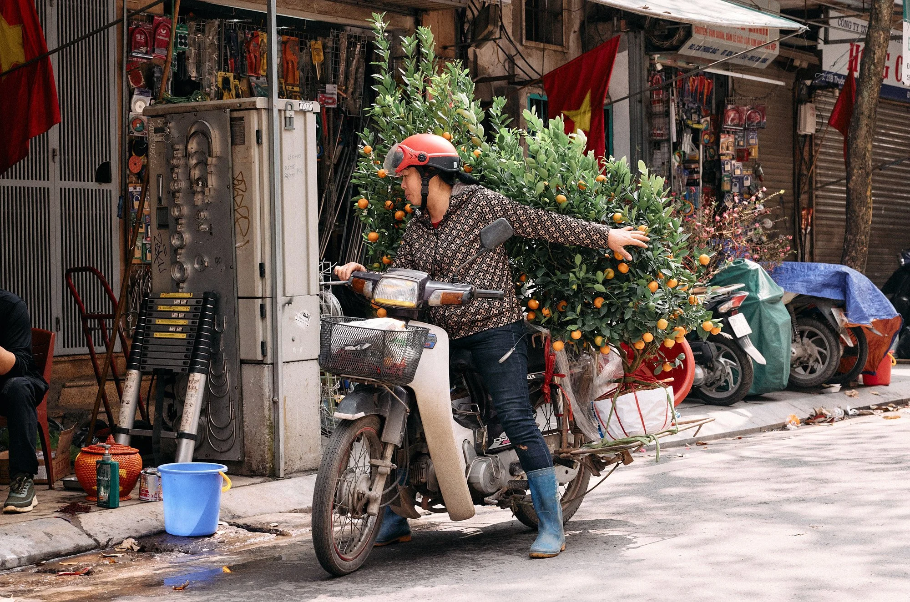

Project
One

A study in letterforms
Typefaces
Typefaces are an important part in designing. They help establish character and show brand identity all while conveying a message. It is important to have the write fonts and typefaces for your design, or else it can ruin it completely.
In the Moment

In the moment images are images taken of people or subjects without being posed. They are in action and motion, often displaying everyday life and activities. They have become significant in brands showing pure intentions and relability.